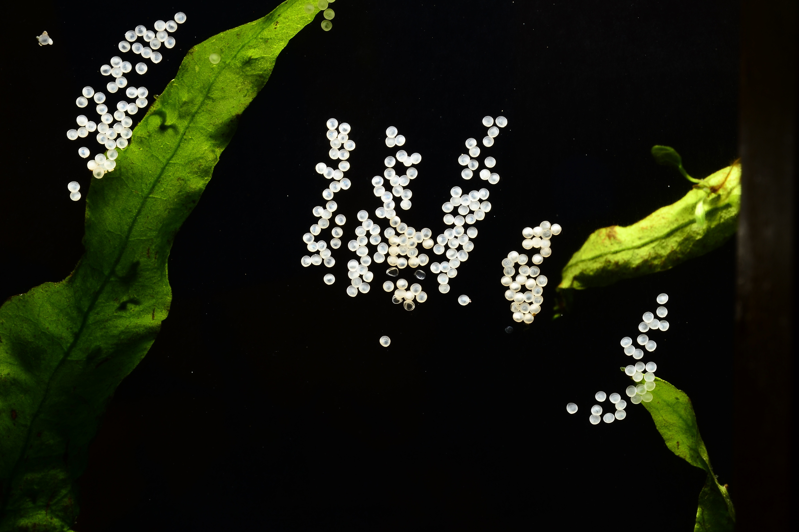

This was mostly to explore different types of Bootstrap components without just repeating what the component is.
Click each item to learn more about the different types of Corydoras:
.accordion-flush class. This is the
first item’s accordion body.
.accordion-flush class. This is the
second item’s accordion body. Let’s imagine this being filled
with some actual content.
.accordion-flush class. This is the
third item’s accordion body. Nothing more exciting happening
here in terms of content, but just filling up the space to make
it look, at least at first glance, a bit more representative of
how this would look in a real-world application.
.accordion-flush class. This is the
first item’s accordion body.
.accordion-flush class. This is the
first item’s accordion body.

Sometimes, when the water conditions are right, Corydoras will lay
eggs on the glass.
You can learn more about Corydoras on the
Wikipedia page.